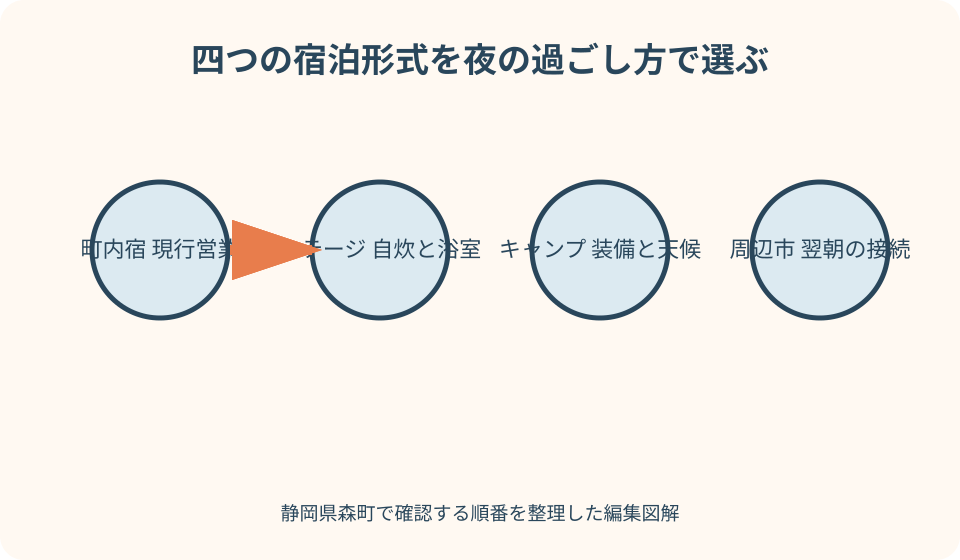
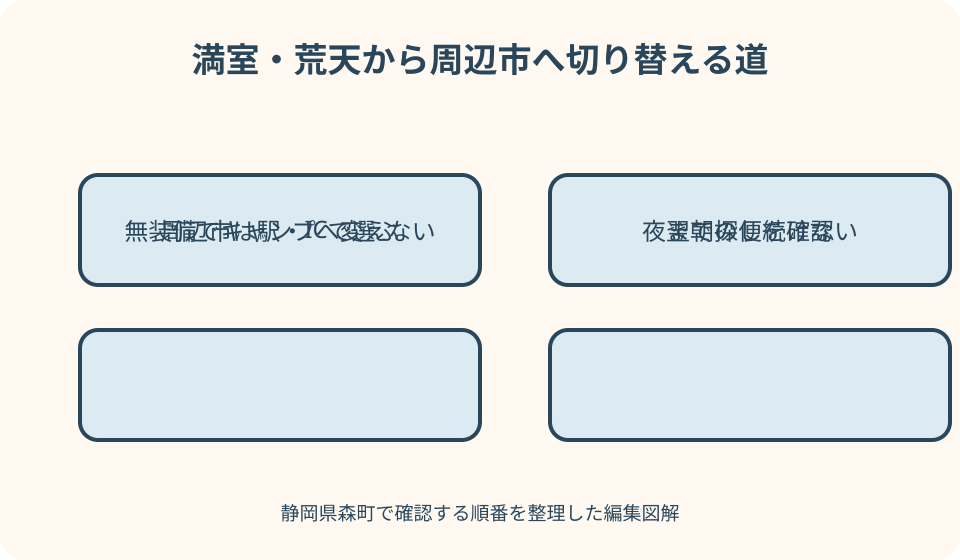

森町観光・宿泊｜最終確認 2026-08-10
静岡県森町の宿泊施設・キャンプ・周辺宿｜旅程から選ぶ泊まり方
森町で泊まる方法は、町内の宿、キッチン付きコテージ、テントやバンガローのキャンプ、袋井・掛川など周辺市のホテルで条件が大きく違います。検索結果のホテル一覧を距離順に並べても、食事、風呂、寝具、門限、夜道、公共交通が合うとは限りません。森町公式はコテージ・アクティの設備と利用時間を掲載し、観光協会は吉川キャンプ場カワセミの里を紹介していますが、空室や料金を将来保証する情報ではありません。本記事は旅の主目的と翌朝の移動から泊まり方を選び、満室なら周辺市へ安全に切り替える手順を示します。

編集イラスト町内宿・コテージ・キャンプ・周辺市を分ける
町内宿は運営者ごとに客室と食事が異なり、コテージは一棟・一室を家族で使い自炊できる場合があり、キャンプは屋外設備を自分で整えます。周辺市ホテルは森町外から移動します。
最初に、翌朝の目的地を小國神社、アクティ森、町なか、移住相談のどれにするか決めます。目的地へ早く行けることだけでなく、前夜の食事と入浴を完了できる場所を選びます。
町内に泊まりたい気持ちと、夜遅く着きたい希望が両立しない場合があります。チェックインへ間に合わないなら、駅や高速から入りやすい周辺市を選び、翌朝に森町へ入ります。
キャンプ料金とホテル一室料金を単純比較しません。テント、寝具、燃料、食材、入浴、清掃、天候変更まで含めた負担を見ます。
本記事は筆者が各施設へ宿泊した比較体験ではありません。2026年8月10日に確認した森町、観光協会、施設公式を基に、予約前の判断を整理しています。
町内宿は現在の営業と宿泊条件を直接確認する
森町観光協会の宿泊・休憩処検索は候補探しの入口です。掲載があっても、現在も一般宿泊を受けるか、休業日、客室、食事を施設へ直接確認します。
移住レポートにゲストハウスの紹介があっても、公開時点と現在の営業は別です。移住者の物語を予約サイトとして使わず、公式発信と連絡先を探します。
町内宿へは、一人旅、家族、仕事、合宿など目的を伝えます。食事付きか素泊まりか、共同風呂・トイレか、寝具、冷暖房、Wi-Fiを確認します。
古い町家や山間の宿は、階段、段差、鍵、音、虫、駐車が一般的なホテルと違う場合があります。高齢者や乳幼児がいる時は写真だけで判断しません。
予約できない、連絡が取れない場合は、当日直接訪ねて泊まれると考えません。コテージ、キャンプ、周辺市ホテルのどれかへ早めに切り替えます。
コテージ・アクティは設備と利用時間を読む
森町公式はコテージ・アクティをアクティ森隣接の宿泊施設として案内し、キッチン、浴室、トイレ、寝具などを掲載しています。空室と設備稼働は予約時に確認します。
チェックイン時間の掲載があるため、観光を終えてからいつでも入れる施設ではありません。到着が遅れる可能性、鍵の受渡し、門限、連絡方法を当事者へ尋ねます。
キッチンと調理器具があることは、食材、調味料、洗剤、布巾までそろう意味ではありません。備品一覧、持参品、近くで買える時間を確認します。
浴室が客室設備として掲載されていても、タオル、シャンプー、湯張り、複数家族の順番を確認します。温泉宿と同じサービスを期待しません。
町ページの料金は確認時点の資料であり、本記事へ固定しません。宿泊日、人数、子ども、協力金、キャンセルを当事者公式と予約窓口で確認します。
吉川キャンプ場は宿泊設備と自然条件を確認する
観光協会は吉川キャンプ場カワセミの里について、バンガロー、貸出テント、持込みテントの宿泊を紹介しています。どの区画が希望日に使えるかは予約先へ確認します。
キャンプ場では、炊事、トイレ、シャワーまたは入浴、電源、照明、ごみ、焚火、ペット、車の乗入れを項目ごとに聞きます。名称から設備を推測しません。
貸出テントがあっても、寝袋、マット、灯り、防寒、雨具が含まれるとは限りません。貸出品の内容、数量、破損時、返却時刻を確認します。
吉川沿いの山間部では、雨、増水、風、暑さ、冷え、虫、道路規制を見ます。天気予報だけで実施を決めず、施設から中止や変更の連絡がないか確認します。
子ども連れは川遊びを宿泊の当然の付属体験にしません。利用可否、区域、水位、救命具、監視を当事者へ確認し、大人が常に見守ります。
周辺市ホテルは駅・ICと翌朝の入口で選ぶ
町内が満室なら、袋井、掛川、磐田など周辺市のホテルを検討します。本記事は現在営業するホテル一覧を断定せず、公式予約ページと宿へ直接確認する手順を示します。
公共交通なら、掛川駅から天浜線、袋井駅から路線バスなど翌朝の入口を選びます。最安料金だけで遠い駅へ泊まらず、乗換えと最初の便を含めます。
車なら、森掛川IC、遠州森町スマートIC、袋井ICなど翌朝の経路を確認します。ホテルの駐車料金、出入庫時間、車高、満車時の提携先を尋ねます。
周辺市で夕食を済ませてから宿へ入るのか、ホテル内・近隣で食べるのか決めます。森町観光後に夜の飲食店を探しながら移動しません。
翌朝が小國神社の繁忙期なら、周辺市に泊まっても道路混雑は残ります。通常所要を保証にせず、参拝以外の予定を減らします。

予約可否は人数・泊数・到着時刻まで伝える
問い合わせでは、宿泊日、泊数、大人・子ども・幼児、到着予定、車台数、食事、寝具を伝えます。空室ありの表示だけで希望人数を収容できるとは限りません。
コテージやバンガローは一室定員と寝具数が異なる場合があります。添い寝、追加寝具、乳児料金を確認し、定員を超えて利用しません。
予約フォームを送っただけで確定したと思わず、確認メール、支払、予約番号を見ます。返信がない場合は当事者が示す連絡方法で確認します。
キャンセルは、悪天候、体調、道路規制、人数減で扱いが違う場合があります。期限と料金、施設側中止、日程変更を予約前に聞きます。
複数施設を同時に仮予約して放置しません。第一候補の条件を確認し、合わなければ取消しを完了してから次へ進みます。
食事は宿泊形式ごとに調達時刻を決める
食事付き宿なら夕食と朝食の有無、開始、内容、アレルギー、遅着時を確認します。素泊まりなら、町内飲食店が夜に必ず開くとは考えず事前に決めます。
コテージ自炊では、食材を町なかで買ってから北部へ入ります。山間部到着後に近くの店で全品そろうと仮定せず、冷蔵品の保冷と調理器具を確認します。
キャンプのBBQ器材貸出が紹介されても、食材、炭、網、着火、片付けまで含むとは限りません。火気利用と消火、ごみを当事者へ聞きます。
朝食を自炊するなら、翌朝の出発時刻から逆算して簡単な物を選びます。調理と洗浄でチェックアウトへ遅れないようにします。
アレルギーや食事制限は予約時に具体的に伝え、対応不能なら持参食の可否を確認します。共用器具と保存も本人の医療上の条件に照らします。
風呂・トイレ・門限は夜になる前に確かめる
客室風呂、共同浴場、シャワーだけ、外部施設利用では準備が違います。利用時間、石けん、タオル、子ども、高齢者の段差を確認します。
キャンプ場では夜間のトイレまでの距離、照明、鍵、履物を聞きます。昼の写真から暗さや雨天の経路を判断しません。
門限や消灯、車の出入り、チェックイン終了を確認します。花火、夜の川遊び、大声、音楽を自由に行えるとは考えません。
夜間に体調不良や車の故障が起きた時、管理人へ連絡できる時間と緊急連絡を確認します。施設スタッフが常駐するとは限りません。
入浴やトイレの条件が家族に合わない場合、寝具や景色が魅力でも別形式へ変えます。周辺市ホテルの客室設備を公式で確認します。
車と公共交通は夜と翌朝の二方向で見る
車は宿までの推奨道路、夜間照明、給油、冬季や雨天、駐車位置を確認します。ナビが示す山道の近道へ入らず、施設公式の経路を使います。
公共交通は到着便だけでなく、翌朝の便、停留所までの歩行、荷物を見ます。町営バスの運行日と時刻を森町公式で確認します。
コテージやキャンプ場へ公共交通で行けるとしても、食材や寝具を持つ移動が現実的か検討します。タクシーの配車を当然にはしません。
周辺市ホテルなら駅近でも、翌朝の森町行き接続が少ない場合があります。朝食時間と列車・バスを照合し、食べられない予約プランを選びません。
連泊中に車を置いたまま町内を移動する場合、駐車継続の許可を宿へ聞きます。宿泊者用駐車場を観光拠点として無断利用しません。
子連れは寝具・階段・夜泣き・遊び場を確認する
乳幼児は添い寝、ベビーベッド、寝具、転落防止を宿へ確認します。コテージの二階寝室や階段は、写真だけで安全と判断しません。
キッチンでは包丁、火、ポット、洗剤へ子どもが触れない管理が必要です。備品の置き場所とゲートを確認し、家庭用安全用品を持参します。
キャンプは川、火、ペグ、ロープ、暗闇が加わります。子どもを自由に遊ばせる宿泊ではなく、大人の見守り役を交代で決めます。
夜泣きや大声が心配なら、隣室との距離、静粛時間、退出の相談先を確認します。完全防音や貸切を名称から推測しません。
子どもが疲れた時に観光を省き、早く宿へ入れるかも重要です。チェックイン前に室内を使えるとは限らないため、休憩先を別に持ちます。
連泊は清掃・ごみ・食材・洗濯で判断する
連泊では毎日の清掃、タオル・寝具交換、ごみ回収、鍵、日中の入室を確認します。ホテルとコテージ、キャンプで運用は異なります。
コテージ自炊は食材管理と食器洗浄が続きます。冷蔵庫容量、消耗品、ごみ分別、買足し場所を確認し、観光時間をすべて調理に使わないようにします。
キャンプ連泊は天候変化、濡れた装備、入浴、充電、洗濯を考えます。晴天初日の条件を全泊へ当てはめません。
周辺市ホテルは清掃や朝食が利用できても、毎日森町へ往復する交通費と時間が増えます。移住下見なら地域別に宿を移す方法もあります。
仕事を伴う連泊ではWi-Fi掲載だけで通信品質を保証せず、机、電源、通話場所を宿へ確認します。重要な会議の代替回線も用意します。

満室・荒天時は泊まる地域を早めに変える
町内宿やコテージが満室なら、キャンプへ無装備で切り替えません。屋外経験、装備、天候が合わなければ周辺市ホテルを探します。
キャンプが荒天で難しい場合、コテージに当日空室があると期待しません。中止条件を確認した時点で周辺市の公式予約を調べます。
周辺市も満室なら、日程変更、日帰り、さらに広い交通圏を検討します。宿泊場所が決まらないまま夜まで森町観光を続けません。
予約サイトに残室表示があっても、人数、子ども、駐車、到着時刻が合うか施設公式で確認します。決済前にキャンセル条件を読みます。
災害や道路規制時は観光を中止し、自治体と施設の案内に従います。避難所を予約なしの宿泊代案として計画しません。
良い点：目的に応じて滞在形式を変えられる
森町には町内宿の候補、設備を備えたコテージ、自然に近いキャンプという異なる形式があります。町に泊まる目的を一つ選べる点が良さです。
コテージはキッチンや浴室の掲載があり、家族で生活に近い滞在を試す候補になります。利用可能な設備と空室を確認することが条件です。
キャンプは屋外を楽しめますが、装備と天候判断を自分で担います。ホテルより安い、子ども向けという一言で選ばず、経験に合わせられます。
周辺市ホテルを含めれば、公共交通、遅い到着、連泊の選択肢を広げられます。森町内に泊まれないことを旅の失敗にしません。
森町の移住案内が何度か訪れ四季を見ることを勧めているように、宿泊形式を変えて複数回訪れると、町なかと山間の違いを確認できます。
注文したい点：宿泊形式と現行営業を一画面で分けたい
観光協会の宿泊検索では、一般宿、コテージ、バンガロー、テント、休憩処を区分し、営業確認日と当事者予約先を示すと分かりやすくなります。
各施設に、食事、風呂、トイレ、寝具、門限、チェックイン、子ども、ペット、Wi-Fi、駐車、公共交通の確認欄があると比較できます。
コテージとキャンプの当事者公式では、空室照会、貸出品、キャンセル、荒天、道路、ごみを最新化し、町の古い案内から誘導したいところです。
車なし向けには、宿最寄りの停留所、運行日、夜道、翌朝便、荷物を地図で確認できる導線が必要です。
周辺市ホテルは施設名を固定一覧にせず、袋井・掛川など交通結節点の公式観光・宿泊検索へ案内すれば、休廃業による誤情報を減らせます。
代案・結論：夜と翌朝を一組にして予約する
前日は、宿泊形式、人数、泊数、到着、食事、風呂、寝具、門限、交通を確認します。予約確定とキャンセル条件を保存します。
町内宿は営業、コテージは設備と自炊、キャンプは装備と天候、周辺市ホテルは翌朝の接続を重点確認します。同じ質問票で全てを評価しません。
到着日は暗くなる前に山間道路へ入り、チェックインを先に完了します。食材や入浴の準備を後回しにせず、夜の外出を減らします。
満室ならキャンプへ自動変更せず、旅程と経験に合う周辺市へ移します。荒天なら宿泊だけでなく観光も短縮します。
結論は、森町の宿泊を建物名の比較で決めないことです。夜を安全に過ごし、翌朝の主目的へ無理なく出発できる形式を一つ選びます。
大石の視点：移住下見は宿から生活条件を記録する
私（大石）は、移住下見の宿泊では観光の感想だけでなく、夜の道路、買い物、音、朝の気温、通信を記録します。宿の快適さを地域全体の暮らしと同一視しません。
家族の記録には、予約日、空室確認、食事、風呂、寝具、門限、駐車、バス、子どもの負担、キャンセルを書きます。次回は最新条件へ更新します。
コテージで自炊しても、森町の家が同じ設備を持つとは限りません。空き家を見る時は道路、境界、水道、浄化槽、農地、登記を別に確認します。
連泊して地域を比べる時は、町なかと山間部を同じ移動感覚で評価しません。通勤、通学、病院、買い物を朝夕に実際の経路で確認します。
この記事の情報確認日は2026年8月10日です。営業、空室、料金、設備、交通は変更されます。予約前に施設当事者と森町の最新公式情報を確認してください。
公式情報・確認先
掲載内容は次の一次情報を基礎に整理しました。営業、料金、催し、交通は変わるため、出発前または手続き前にリンク先で最新情報を確認してください。
- 観光（静岡県森町、2026-08-10確認）
- コテージ・アクティ（静岡県森町、2026-08-10確認）
- 森町の公共交通について（静岡県森町、2026-08-10確認）
- 移住定住手続き（静岡県森町、2026-08-10確認）
- 観光案内・宿泊休憩処検索（森町観光協会、2026-08-10確認）
- 吉川キャンプ場 カワセミの里（森町観光協会、2026-08-10確認）
- コテージ・アクティ（コテージ・アクティ、2026-08-10確認）
- お問い合わせ（コテージ・アクティ、2026-08-10確認）